Collecting & Delivering Information to Support Coordination
-
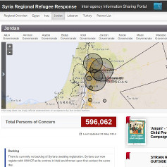
Syrian Refugee Response Portal Information Portal
The information portal is the main gate to Operational Data concerning the Refugee Response.
-
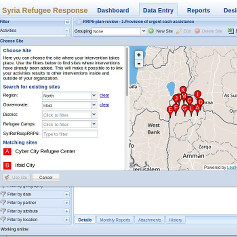
Activities tracking Data Collection
ActivityInfo is a collaborative system that enables humanitarian organizations participating to the Refugee Response to create monitoring databases and map and analyze results.
-
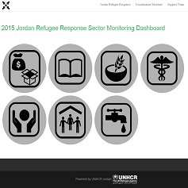
2015 Sector Dashboards 2015 Monthly Reporting on Jordan Refugee Response
2015 Jordan Refugee Response Sector Monitoring Dashboard
-
VAF Vulnerability Assessment Framework
Targeting assistance to refugee households on the basis of vulnerability
-
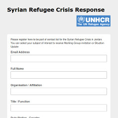
Inter-agency Contact List Information Sharing
Receive on a weekly basis the updates on the inter-agency response in Lebanon. Your contact details will be shared with Sector Leads and members of the Inter-agency response and used for coordination purposes.
-
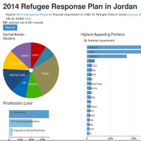
RRP6 Appeal Explore budget requirement
This datavisualisation allows you to explore budget requirement per sector, organisation, prioritisation level and governorates.
-
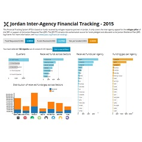
RRP6 Financial Tracking Explore spending for Refugee Response
This datavisualisation allows you to explore budget rspent per sector & organisation on a quarterly basis.
-
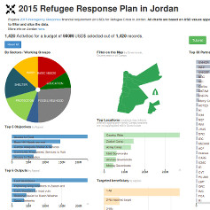
2015 3RP Jordan (Refugee Pillar) Explore budget requirement
This datavisualisation allows you to explore budget requirement per sector, organisation, prioritisation level and governorates.
-
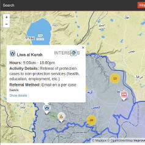
Services Advisor Find services availble to refugees in Jordan
This tool allow humanitarian partners to identify services avaialble for refugees and to access the information about the referral system in place.
-
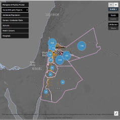
Situation Map Jordan Webmap
The Situation maps for Jordan aims at providing a Common Operational Picture of the refugee situation in Jordan.
-
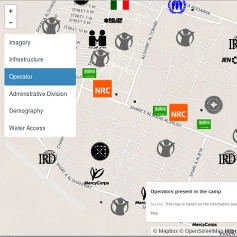
Situation Map Zaatari Webmap
The Situation maps for Jordan aims at providing a Common Operational Picture of the refugee situation in Zaatari Refugee Camp.
-
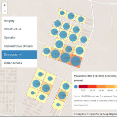
Situation Map Azraq Webmap
The Situation maps for Jordan aims at providing a Common Operational Picture of the refugee situation in Azraq Refugee Camp.
-
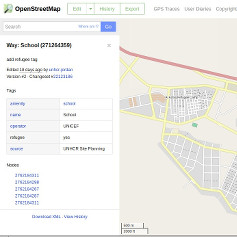
Refugee Camp Map Mapping tools
Camps in Jordan are all mapped in OpenStreetMap. Instructions have been developped to leverage the existing capacity of OpenstreetMap.
-
 Information management toolkit Guidance
Information management toolkit GuidanceThe Information management toolkit is an online source of guidance and template to support IM activities.